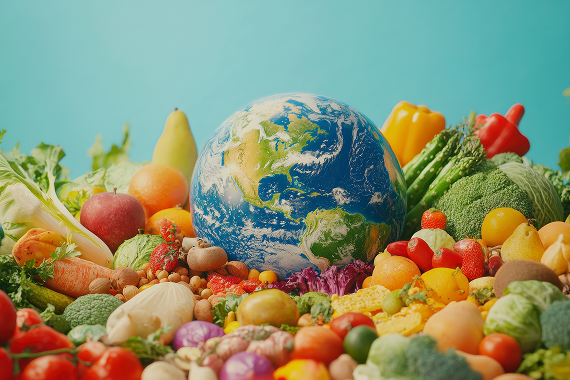
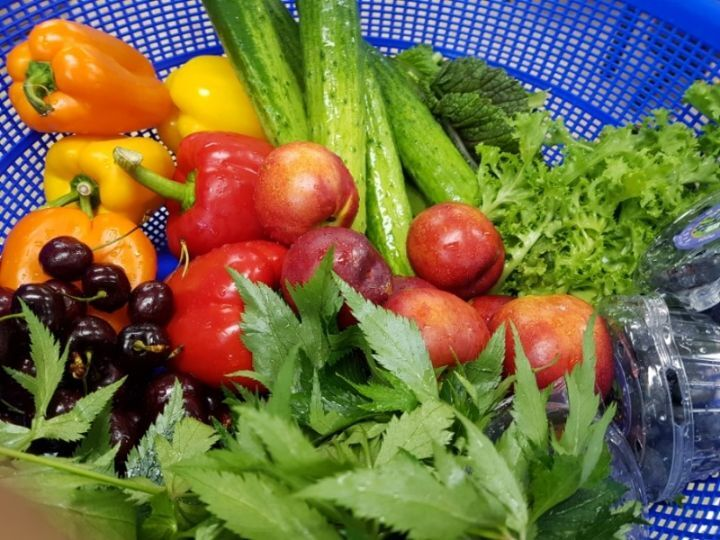

이 표현의 핵심 키워드는 지구와 건강(Global Wellness), 생명의 연결(Life Connection), 자연과 인간의 조화(Harmony),지속 가능한 치유(Sustainable Healing), 글로벌 힐링(Global Healing)을 의미합니다. 이것은 푸드표현예술치료의 철학적 의미와 연결됩니다. 밥상 위의 지구, 먹거리와 생명의 연결, 함께 치유하는 세상, 나에서 지구로 삶을 살리는 식탁을 의미합니다

이 자연 그자체인 이미지의 키워드는 푸드표현예술치료가 담고 있는 자연 생명력(Vitality), 신선한 감각(Fresh Senses), 컬러 에너지(Color Energy), 오감 자극(Sensory Activation), 건강한 밥상(Healthy Table), 회복의 시작(Beginning of Healing)을 나타냅니다. 이것은 푸드표현예술치료의 감성과 연결되어 감각 깨움, 마음 회복, 생명 에너지, 자연 치유로 연결되며, 파이토케미컬의 천연 색을 표현하고 먹으며 치유하는 뇌감각자극을 기반한 FEAT의 자연 회복력을 의미합니다